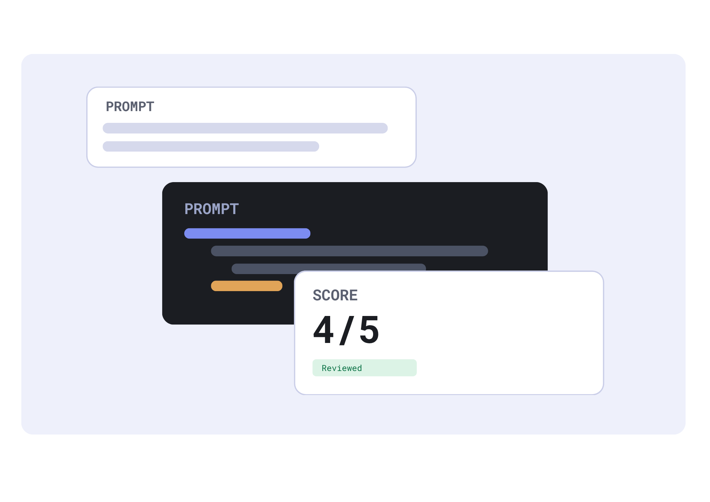

LLM Evaluation Workspace
Evaluate AI Responses without the stress.
Save prompts, review model answers, record errors, and collaborate with your research team, all in one singular shared workspace.

How it works
-
Add a Respone
Record the exact prompt and AI output you want to review.
-
Evaluate It
Score accuracy from 1 to 5 and tag the kind of error you found.
-
Track Patterns
Comapre test cases across models to spot mistakes that keep repeating.
About EvaLLM
Large language models can produce answers that sound convincing but contain wrong facts, faulty code, or ignored instructions. EvaLLM gives graduate research labs and course project teams one place to save those prompts and responses, score them against the behavior they expected, and discuss the results.
Project owners manage test cases, while collaborators can read evaluations and leave comments. Over time, the team can search its history to see whether a model keeps making the same kind of error.
Accessibility
EvaLLM is built with semantic HTML landmarks, a logical heading order, labeled form fields, and visible keyboard focus. Every page can be used with a keyboard alone, starting from the "Skip to main content" link.
Found a barrier? Tell us through the Help link in the footer and we will fix it.